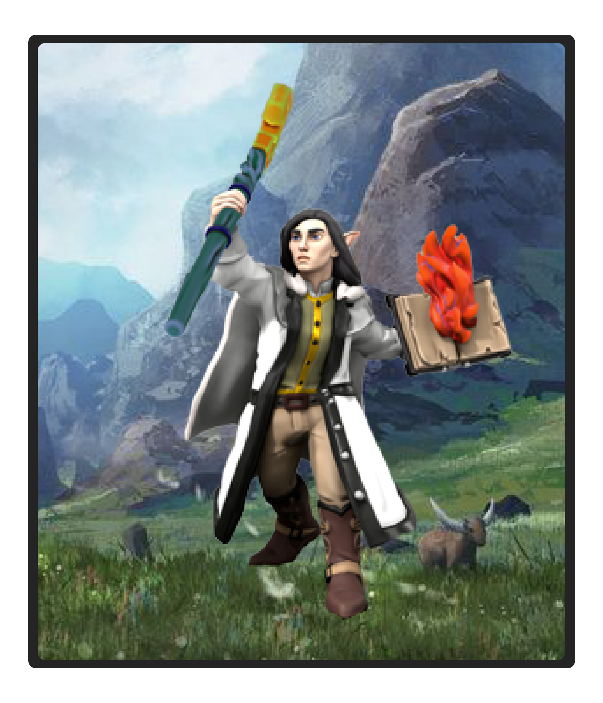
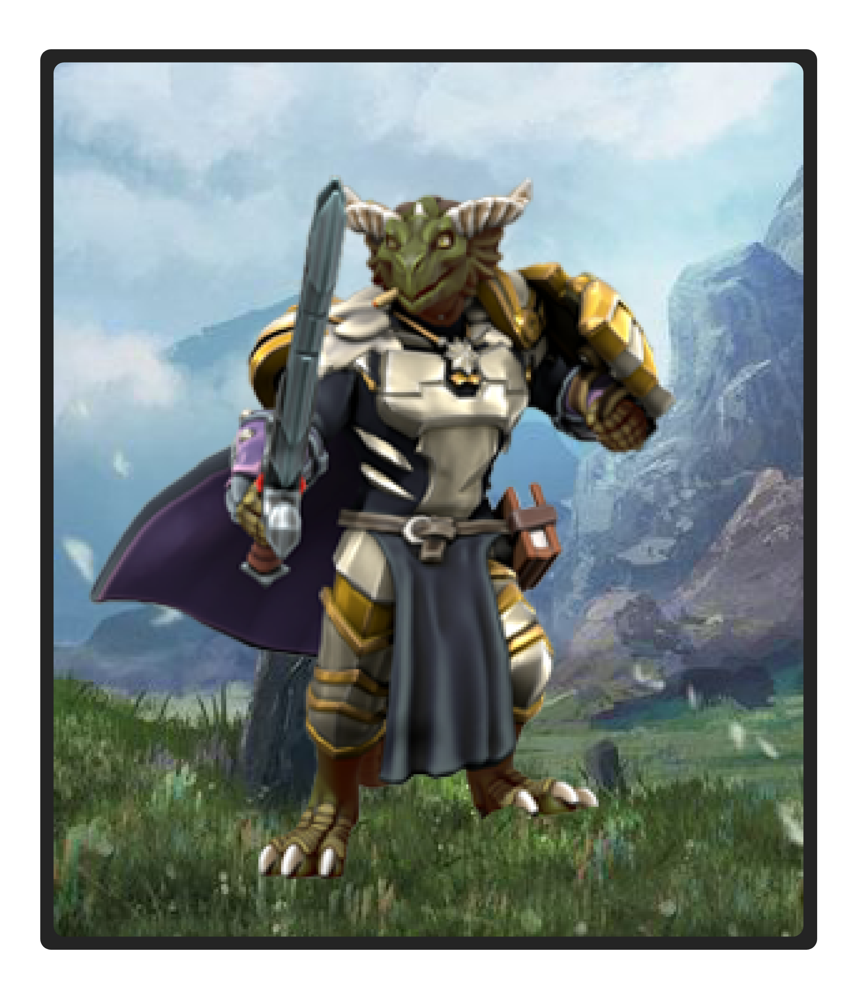
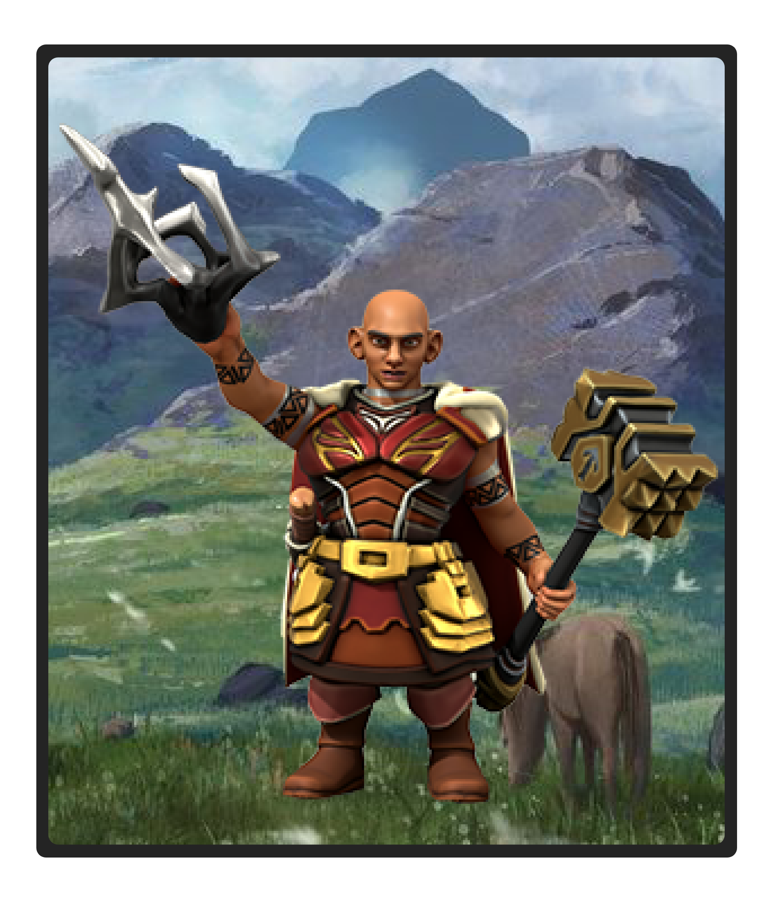
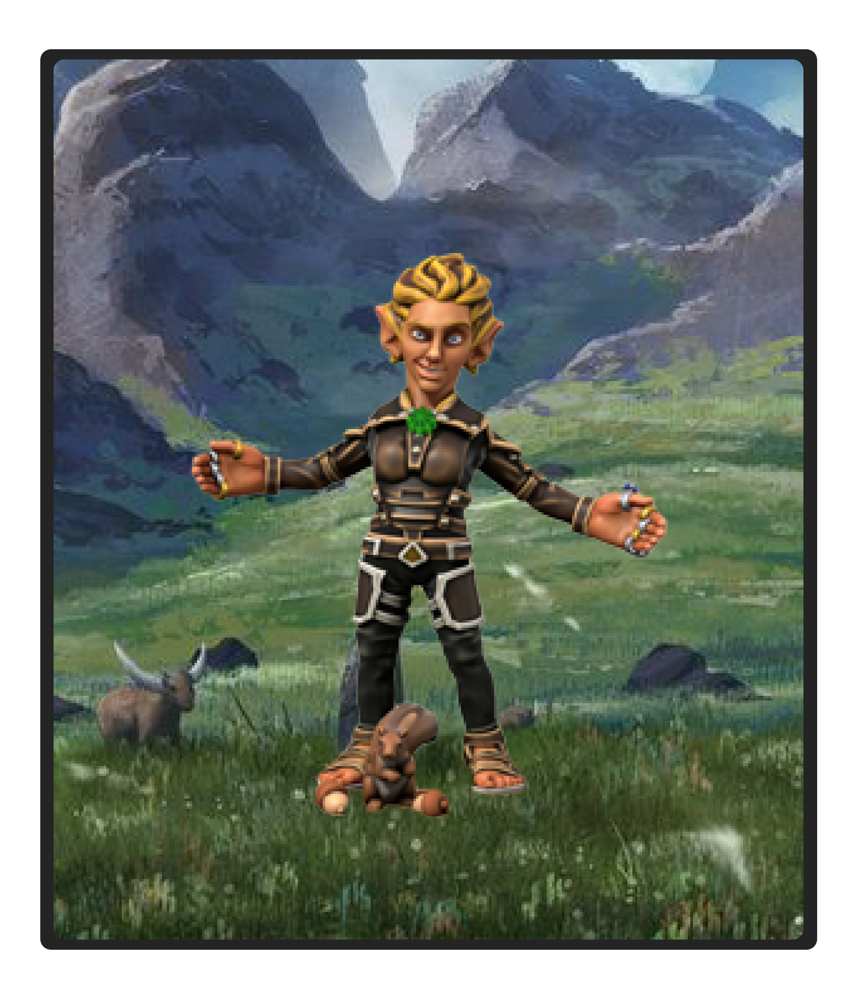
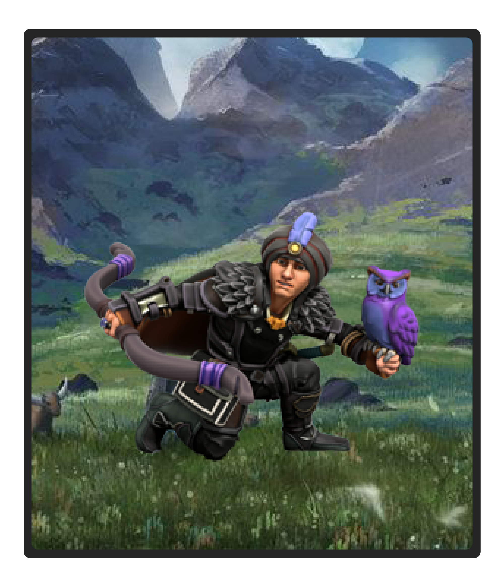

Crofoot
Crofoot the Clear-Sighted is an elven wizard from Blythe.
Crofoot pursues knowledge of the Universe so that he can bring peace to the realms.
Learning from his past mistakes, he fights to stand up for the people and do what's right.

Iroh
Iroh Yarjiret the Chaotic Sentinel is a dragonborn fighter from the West.
Next in line to be the king of his clan, Iroh fights to prove his worthiness to his father that he is ready to be a leader.
He acts as a double agent, exploring what is good and what is evil with his eyes and his heart.
While he struggles with this internal and external battle, his own moral code fights to win out in the end.

Kathra
Kathra Silverhorn the Faenor is a dwarven cleric from Mintarn.
Initially bonded to a chaotic evil goddess, Kathra fights to find herself amongst the gods interfering with mortal affairs.
She cares for those that need help, but beware getting on her bad side.

Lil Wyvern
Lil Wyvern the Magnificent is a gnomish rapping bard from the Everland area.
Born into the Gucci family, he travels the realms to spread his rhymes and good feelings, especially necessary during these trying times.
With his charm and warm heart, he connects the realms with friendship and defends what is good.
His best friend Fyfe (a squirrel) is the inspiration for the name Fyfe's Five.

Silas
Silas Ravencape the Knight of Shadows is a quarterling rogue from Waterdeep.
While he was poised to become a physician, destiny had other plans, sending him down a path of retribution.
Struck by fate and his father's legacy, Silas fights to find his own path in the realms.
